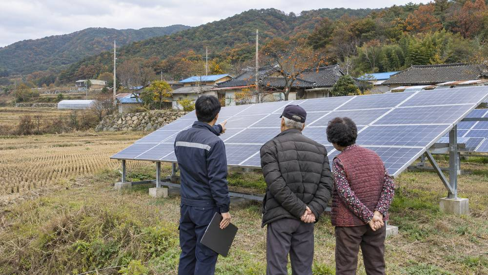

시민에너지
전남광주시의회, 녹색에너지연구원에 햇빛소득마을 준공 뒤 지원 주문

행정사무감사에서 박원종 위원장이 요구했고 연구원은 인공지능 정산 시스템을 도입 중이라고 답했다
전남광주통합특별시의회 박원종 에너지산업산림위원장이 11월 10일 녹색에너지연구원 행정사무감사에서 햇빛소득마을의 준공 뒤 지원을 주문했다. 박 위원장은 공모가 선정 단계에만 관심이 쏠려 이후 운영 관리가 소홀해진다고 지적했다. 고령 주민이 복잡한 회계와 발전설비 유지관리를 맡기 어렵다며, 발전소가 정상 운영될 때까지 연구원이 기술과 경영을 지원해야 한다고 말했다.
황규철 녹색에너지연구원장은 전문 회계법인과 함께 고령 주민도 쉽게 정산할 수 있는 인공지능(AI) 기반 관리 시스템을 도입하고 있다고 밝혔다. 황 원장은 특별시 에너지산업본부와 협의해 용역 과업을 보완하고, 선정 뒤 유지보수와 운영을 지원하겠다고 답했다.
행정안전부는 8월 1차 공모에서 신청 129곳 중 86곳을 햇빛소득마을(주민이 재생에너지 수익을 나누는 모델)로 선정했다. 전남·광주가 19곳으로 지역별 최다였고, 86곳 중 77곳은 부지 임대와 자금 계획, 계통 연계를 보완하는 조건부 선정이다.
출처: 한국시사경제 2026-11-13 권충현 원문 보기
출처: 행정안전부(정책브리핑 게재) 2026-08-03 햇빛소득마을 86곳 첫 선정…태양광 설치비 최대 85% 지원 원문 보기
출처: 중도일보 2026-11-13 이정진 원문 보기
시민이 만들고 지역이 소유하는 에너지 전환제4섹터 방식 시민주도 지역에너지 공공개발